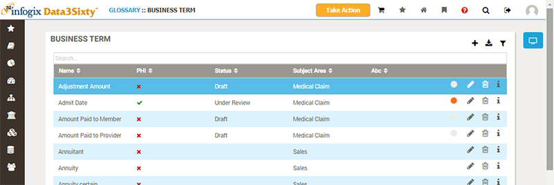
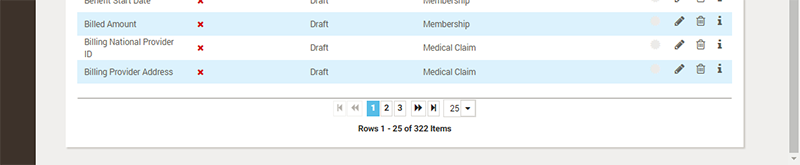
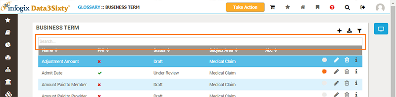
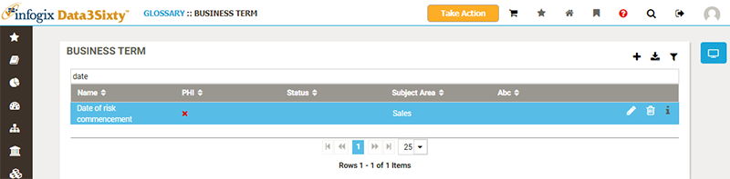
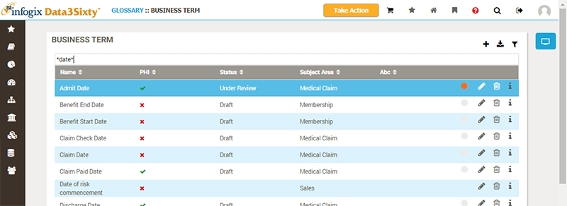
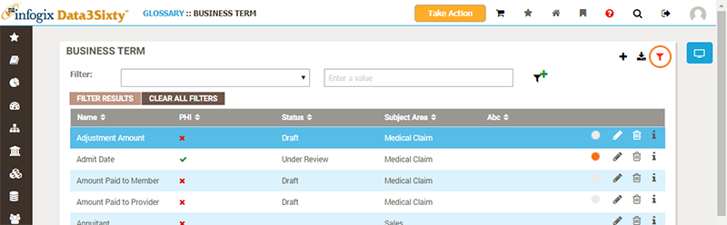
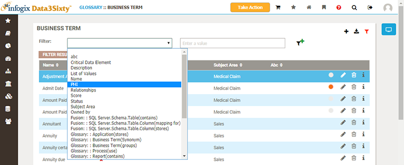
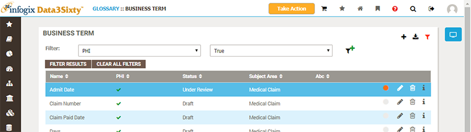
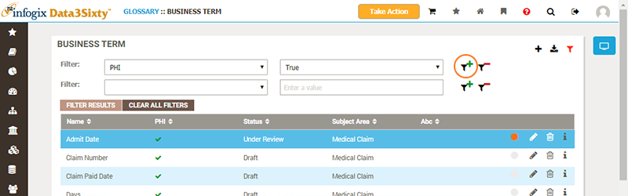
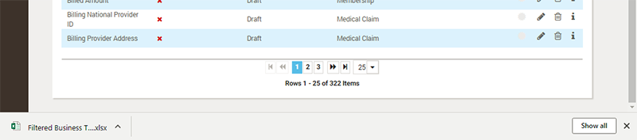

Infogix Data3Sixty uses the same table component across the whole application to list collections of items:

Lists of items are split into multiple 'pages', which you can navigate via the paging controls at the bottom of the list:

You can navigate to the first, previous, next or last pages via the arrow buttons, or to a specific page by clicking on a number. The drop-down list on the right allows you to change how many items are listed per page. A summary below the controls tells you which rows you are currently viewing, and how many rows are available to view in total.
You can quickly filter the list by typing a search term into the Search field at the top of the list:

Only those rows which have field values which start with the search text, ignoring case, will remain in the list:

You can use wildcards for more control over how the search term is used to find matches. For example, you can use an asterisk either side of a search term to locate any row which contain the search text:

You can switch between the basic search filter and more advanced filtering by hitting the Filter Mode button:

In Filter Mode you choose which fields to match values against, including fields which may not be actually be displayed in the table:

As with the basic search filter, text field matches are found against values which start with the search text, ignoring case. You can use wildcards (eg. *date*) to widen the search.
Hit the Filter Results button to apply the filter to the table:

You can use the Add Filter button to build a filter which matches on multiple criteria:

The Export to Excel button at the top of the table can be used to export the filtered table contents to an Excel file.
Depending on the web browser you are using, you may be prompted for a download location, or the file may be saved directly into your Downloads folder and shown in a bar across the bottom of your browser window:
